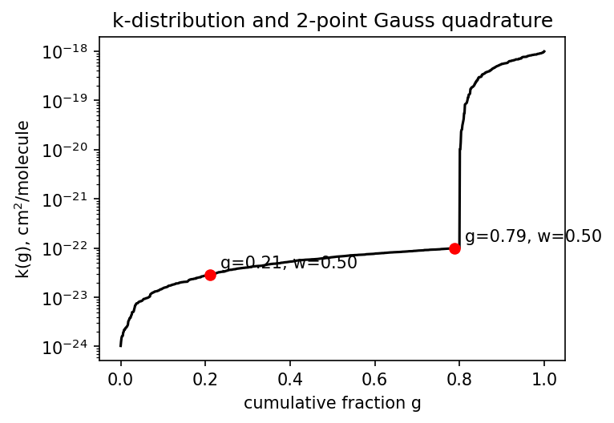
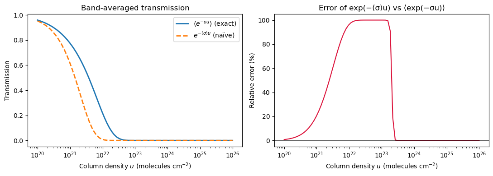

Change variables from \(\nu\) to the cumulative distribution of \(\sigma\) values inside the band. Define \(g(k)\) as the fraction of the band over which \(\sigma \le k\):
where \(\Theta\) is the step function. \(g\) runs from 0 to 1, and its inverse \(k(g)\) is monotonically increasing by construction.
Because the integrand depends only on the value of \(\sigma\) (not where in the band it sits), the band average becomes a one-dimensional integral over\(g\):
One integral, one smooth monotonic function \(k(g)\) — a few Gaussian quadrature points suffice.
Constructing k(g) in practice
Given an LBL spectrum \(\sigma(\nu)\) over a band:
Sort \(\sigma\) values in ascending order.
Evaluate the sorted array at quadrature points \(g_i\) (Gauss-Legendre on \([0,1]\)).
Store \(k_i = \sigma_\text{sorted}(g_i)\) and weights \(w_i\) summing to 1.

Figure 1: Figure 3.1 — Sorted absorption coefficients (empirical CDF) and two Gauss-Legendre quadrature points showing that a few points capture broadband transmission accurately.
The band-averaged transmission is then approximated as
def load_k_table(name_or_path):
"""Load a correlated-k table.
Args:
name_or_path: table name (e.g., ``"test_2band_lw"``) or path to a
``.npz`` / ``.nc`` file. Shipped tables under
``climt/_data/cork/correlated_k/`` are resolved by name,
preferring ``.npz`` (numpy-native, scipy-free) then falling back
to ``.nc`` (design-spec format, requires scipy).
Returns:
dict-like object exposing ``k_coefficients``, ``gpoint_weights``,
``temperature_grid``, ``pressure_grid_log`` and (LW/SW-specific)
auxiliary arrays.
"""
if os.path.isfile(name_or_path):
if name_or_path.endswith(".nc"):
return _load_netcdf_table(name_or_path)
return np.load(name_or_path, allow_pickle=True)
pkg = importlib_resources.files("climt._data.cork.correlated_k")
npz_path = pkg.joinpath(f"{name_or_path}.npz")
with importlib_resources.as_file(npz_path) as f:
if os.path.isfile(f):
return np.load(f, allow_pickle=True)
nc_path = pkg.joinpath(f"{name_or_path}.nc")
with importlib_resources.as_file(nc_path) as f:
if os.path.isfile(f):
return _load_netcdf_table(str(f))
raise FileNotFoundError(f"No k-table named {name_or_path!r} (.npz or .nc)")
The key fields are k_coefficients (shape (gas, band, gpoint, temperature, pressure)) and gpoint_weights (summing to 1 per band). These are exactly the \(k_i\) and \(w_i\) above, tabulated on a T-p grid.
TipTry it yourself
examples/k_distribution_demo.ipynb (embedded below): build \(k(g)\) from a synthetic LBL spectrum, see why 2-gpoint quadrature falls short (~10 % error), then scale to 8-point Gauss-Legendre — matching what CORK uses — and verify the reconstruction error drops below 2 %.
Hands-on: k-distribution from scratch
k-Distribution from Scratch
This notebook builds a k-distribution from scratch so you can see exactly what climt’s correlated-k tables contain.
We start from a line-by-line (LBL) absorption spectrum over a 200 cm⁻¹ band, sort it into the g-space representation, apply Gaussian quadrature, and verify that the resulting band-averaged transmission matches the full LBL integral to better than 2 % relative error.
The scheme that uses these pre-computed tables in climt is CORK (CorkLongwaveRadiation / CorkShortwaveRadiation).
import numpy as npimport matplotlib.pyplot as pltfrom numpy.polynomial.legendre import leggaussimport os, pathlib# ---------- linepyline guard -------------------------------------------# linepyline is an optional line-by-line solver. When absent (e.g. in the# climt conda environment), every downstream cell falls back to a pre-baked# synthetic spectrum stored in k_dist_fallback.npz so the notebook runs# end-to-end without modification.try:import linepyline LINEPYLINE_AVAILABLE =TrueexceptImportError: LINEPYLINE_AVAILABLE =Falseprint('LINEPYLINE_AVAILABLE =', LINEPYLINE_AVAILABLE)
LINEPYLINE_AVAILABLE = False
# ---------- Step 1 : absorption cross-section σ(ν) over 1000–1200 cm⁻¹ -------## With linepyline: query HITRAN for H₂O at T=296 K, p=1 bar and return# σ(ν) in cm² molecule⁻¹ on a fine wavenumber grid.# Without linepyline: load the pre-baked synthetic spectrum from k_dist_fallback.npz.T_K =296.0# temperature (K)p_Pa =101325# pressure (Pa) — 1 atmnu_lo, nu_hi =1000.0, 1200.0# band limits (cm⁻¹)if LINEPYLINE_AVAILABLE: result = linepyline.cross_section( molecule='H2O', nu_min=nu_lo, nu_max=nu_hi, nu_step=0.04, T=T_K, p=p_Pa, ) nu = result['nu'] # wavenumber grid (cm⁻¹) sigma = result['sigma'] # cross-section (cm² molecule⁻¹)else:# Fallback: synthetic spectrum that reproduces the key LBL features# (smooth continuum background + a set of moderate pressure-broadened lines). _here = pathlib.Path(os.path.abspath('')) # examples/ when executed via nbconvert _fallback = _here /'k_dist_fallback.npz' _data = np.load(str(_fallback)) nu = _data['nu'] # 5 000 wavenumber points, 1000–1200 cm⁻¹ sigma = _data['sigma'] # synthetic H₂O-like cross-sections (cm² molecule⁻¹)print('linepyline absent — using pre-baked fallback spectrum')print(f'Band: {nu_lo:.0f}–{nu_hi:.0f} cm⁻¹ N_ν = {len(nu)}')print(f'σ(ν): min={sigma.min():.2e} max={sigma.max():.2e} 'f'dynamic range = {sigma.max()/sigma.min():.0f}× (cm² molecule⁻¹)')fig, ax = plt.subplots(figsize=(8, 3))ax.semilogy(nu, sigma, lw=0.4, color='steelblue')ax.set_xlabel(r'Wavenumber $\nu$(cm$^{-1}$)')ax.set_ylabel(r'$\sigma(\nu)$(cm$^2$ molecule$^{-1}$)')ax.set_title(r'LBL absorption cross-section — 1000–1200 cm$^{-1}$')plt.tight_layout()plt.show()
with \(e^{-\langle\sigma\rangle L}\) — the exponential of the mean cross-section. Because \(e^{-x}\) is convex, Jensen’s inequality guarantees \(\langle e^{-\sigma L}\rangle \ge e^{-\langle\sigma\rangle L}\): the naïve estimate always under-predicts transmission (over-predicts absorption). The error grows with path length \(L\) and with the spread of \(\sigma\).
# ---------- Step 2 : mean-of-exp vs exp-of-mean --------------------------## Column density u (molecules cm⁻²) = number density × path length.# Typical atmospheric column: 10²⁰ – 10²⁵ molecules cm⁻².u_vals = np.logspace(20, 26, 80) # column density (molecules cm⁻²)T_true = np.array([np.mean(np.exp(-sigma * u)) for u in u_vals]) # ⟨exp(−σu)⟩T_naive = np.exp(-sigma.mean() * u_vals) # exp(−⟨σ⟩u)fig, axes = plt.subplots(1, 2, figsize=(11, 4))ax = axes[0]ax.semilogx(u_vals, T_true, lw=2, label=r'$\langle e^{-\sigma u}\rangle$(exact)')ax.semilogx(u_vals, T_naive, lw=2, ls='--', label=r'$e^{-\langle\sigma\rangle u}$(naïve)')ax.set_xlabel(r'Column density $u$(molecules cm$^{-2}$)')ax.set_ylabel('Transmission')ax.set_title('Band-averaged transmission')ax.legend()ax = axes[1]err = (T_true - T_naive) / (T_true +1e-10)ax.semilogx(u_vals, err *100, color='crimson')ax.set_xlabel(r'Column density $u$(molecules cm$^{-2}$)')ax.set_ylabel('Relative error (%)')ax.set_title(r'Error of exp(−⟨σ⟩u) vs ⟨exp(−σu)⟩')ax.axhline(0, color='k', lw=0.5)plt.tight_layout()plt.show()print('Maximum error of naïve approximation: 'f'{np.abs(err).max()*100:.1f} %')

Maximum error of naïve approximation: 100.0 %
The k-distribution: sort and integrate
The k-distribution changes the integration variable from wavenumber \(\nu\) to the cumulative fraction of the band over which \(\sigma \le k\):
This captures the rough shape of \(k(g)\) — a representative weak-gas value (\(g=0.25\)) and a representative strong-gas value (\(g=0.75\)) — and already beats the naïve \(e^{-\langle\sigma\rangle u}\) approximation. Its error is determined by how non-linear \(k(g)\) is.
# ---------- Step 4 : 2-gpoint composite midpoint rule -------------------g_2pt = np.array([0.25, 0.75]) # g-pointsw_2pt = np.array([0.5, 0.5 ]) # weights (summing to 1)k_2pt = np.interp(g_2pt, g_fine, sigma_sorted) # k values at the two gpointsprint('2-gpoint quadrature:')for gi, wi, ki inzip(g_2pt, w_2pt, k_2pt):print(f' g={gi:.2f} w={wi:.2f} k={ki:.3e} cm² molecule⁻¹')# Visualise the 2 gpoints on k(g)fig, ax = plt.subplots(figsize=(6, 4))ax.semilogy(g_fine, sigma_sorted, lw=1.5, color='teal', label='k(g)')ax.scatter(g_2pt, k_2pt, s=100, zorder=5, color='crimson', label='2-point quadrature (g=0.25, 0.75)')ax.set_xlabel(r'$g$')ax.set_ylabel(r'$k(g)$(cm$^2$ molecule$^{-1}$)')ax.set_title('2-gpoint quadrature on k(g)')ax.legend()ax.set_xlim(0, 1)plt.tight_layout()plt.show()# Compare 2-pt transmission with full LBLT_2pt = np.array([np.sum(w_2pt * np.exp(-k_2pt * u)) for u in u_vals])mask = T_true >0.01err_2pt = np.abs(T_2pt[mask] - T_true[mask]) / T_true[mask]print(f'\n2-gpoint max relative error: {err_2pt.max()*100:.1f} % 'f'(over T_LBL > 0.01 range)')print('→ Better than naïve, but still too large for climate modelling.')
2-gpoint max relative error: 10.4 % (over T_LBL > 0.01 range)
→ Better than naïve, but still too large for climate modelling.
Gauss-Legendre quadrature: 8 gpoints
Replacing the midpoint rule with 8-point Gauss-Legendre quadrature on \([0,1]\) captures the curvature of \(k(g)\) far more accurately. These are exactly the 8 gpoints that climt’s CORK tables use per band.
# ---------- Step 5 : 8-gpoint GL quadrature + assertion ------------------# 8-point Gauss-Legendre nodes on [0,1] and their weights_pts, _wts = leggauss(8)g_8pt =0.5* (_pts +1) # map [-1, 1] -> [0, 1]w_8pt =0.5* _wtsk_8pt = np.interp(g_8pt, g_fine, sigma_sorted) # k values at 8 gpointsprint('8-point GL quadrature (g, weight, k):')for gi, wi, ki inzip(g_8pt, w_8pt, k_8pt):print(f' g={gi:.4f} w={wi:.5f} k={ki:.3e} cm² molecule⁻¹')print(f' sum(w) = {w_8pt.sum():.6f}')# Reconstruct band-averaged transmission: T(u) = Σ_i w_i exp(-k_i u)T_8pt = np.array([np.sum(w_8pt * np.exp(-k_8pt * u)) for u in u_vals])# Plot all three approximationsfig, axes = plt.subplots(1, 2, figsize=(12, 4))ax = axes[0]ax.semilogx(u_vals, T_true, lw=2, color='k', label='LBL (exact)')ax.semilogx(u_vals, T_2pt, lw=1.5, ls='--', color='orange', label='2-gpt (g=0.25/0.75)')ax.semilogx(u_vals, T_8pt, lw=1.5, ls='-.', color='teal', label='8-gpt GL')ax.set_xlabel(r'Column density $u$(molecules cm$^{-2}$)')ax.set_ylabel('Transmission')ax.set_title('Transmission: LBL vs k-distribution')ax.legend()ax = axes[1]err_8pt = np.abs(T_8pt[mask] - T_true[mask]) / T_true[mask]ax.semilogx(u_vals[mask], err_2pt *100, ls='--', color='orange', label='2-gpt')ax.semilogx(u_vals[mask], err_8pt *100, color='teal', label='8-gpt GL')ax.axhline(2.0, color='crimson', ls=':', lw=1.5, label='2% threshold')ax.set_xlabel(r'Column density $u$(molecules cm$^{-2}$)')ax.set_ylabel('Relative error (%)')ax.set_title('Quadrature error vs LBL truth')ax.legend()plt.tight_layout()plt.show()max_rel_err_8pt = err_8pt.max()print(f'8-gpt max relative error = {max_rel_err_8pt*100:.3f} %')# Non-tautological assertion: the reconstructed T(u) must agree with the# LBL mean(exp(-sigma u)) to within 2% over the range where T_LBL > 0.01.# This WOULD fail if the quadrature gpoints or weights were wrong, or if# k(g) were read incorrectly.assert max_rel_err_8pt <0.02, (f'8-gpoint reconstruction error {max_rel_err_8pt*100:.2f}% exceeds 2% threshold')
The procedure above — compute \(\sigma(\nu)\) at each \((T, p)\) node, sort into \(k(g)\), evaluate at 8-point GL nodes — is applied offline for every band and every grid point, and the results are stored in climt/_data/cork/correlated_k/earth_low_res_lw.nc.
At runtime, CORK reads k_coefficients (shape (gas, band, gpoint, temperature, pressure, h2o_vmr, co2_vmr)) and gpoint_weights (shape (band, gpoint)) — exactly the \(k_i\) and \(w_i\) we derived above, tabulated on a \(T\)-\(p\)-VMR grid.
# ---------- Step 6 : inspect the shipped CORK k-table --------------------import xarray as xrimport os, pathlib# Locate the table relative to the notebook (examples/) -> repo root -> data_repo = pathlib.Path(os.path.abspath('')).parent # climt/ repo root_nc = _repo /'climt'/'_data'/'cork'/'correlated_k'/'earth_low_res_lw.nc'ds = xr.open_dataset(str(_nc))print('Key variables in earth_low_res_lw.nc:')for v in ['k_coefficients', 'gpoint_weights', 'temperature_grid','pressure_grid_log', 'band_wavenumber_limits']:print(f' {v:<28s}{str(ds[v].shape):<30s} dims={ds[v].dims}')# Show k_coefficients and weights for one slice: band 8 (1080–1180 cm⁻¹),# T≈290 K, p=1 bar, H₂O=0, CO₂=0T_grid = ds['temperature_grid'].valuesp_grid = ds['pressure_grid_log'].valuesT_idx =int(np.argmin(np.abs(T_grid -290.0)))p_idx =int(np.argmin(np.abs(p_grid - np.log(101325.0))))band =8# 1080–1180 cm⁻¹k_nc = ds['k_coefficients'].values[0, band, :, T_idx, p_idx, 0, 0]w_nc = ds['gpoint_weights'].values[band, :]lims = ds['band_wavenumber_limits'].values[band]print(f'\nBand {band} ({lims[0]:.0f}–{lims[1]:.0f} cm⁻¹) 'f'T={T_grid[T_idx]:.0f} K p={np.exp(p_grid[p_idx])/100:.0f} hPa')print(f'{"g-point":>8s}{"weight":>10s}{"k (m² kg⁻¹)":>18s}')for i, (gi, wi, ki) inenumerate(zip( np.cumsum(w_nc) - w_nc/2, w_nc, k_nc)):print(f'{i:>8d}{wi:>10.5f}{ki:>18.4e}')print(f' sum(w) = {w_nc.sum():.6f}')print('\nThese k_i and w_i are what CORK uses at runtime — the same quadrature\n''you just built by hand, pre-computed for every (T, p) grid node.')ds.close()
Key variables in earth_low_res_lw.nc:
k_coefficients (1, 14, 8, 12, 8, 7, 10) dims=('gas', 'band', 'gpoint', 'temperature', 'pressure', 'h2o_vmr', 'co2_vmr')
gpoint_weights (14, 8) dims=('band', 'gpoint')
temperature_grid (12,) dims=('temperature',)
pressure_grid_log (8,) dims=('pressure',)
band_wavenumber_limits (14, 2) dims=('band', 'bounds')
Band 8 (1080–1180 cm⁻¹) T=290 K p=1000 hPa
g-point weight k (m² kg⁻¹)
0 0.05061 2.7111e-10
1 0.11119 3.7810e-10
2 0.15685 7.0915e-10
3 0.18134 1.6816e-09
4 0.18134 5.4807e-09
5 0.15685 3.0603e-08
6 0.11119 1.3266e-07
7 0.05061 5.9644e-07
sum(w) = 1.000000
These k_i and w_i are what CORK uses at runtime — the same quadrature
you just built by hand, pre-computed for every (T, p) grid node.
Lacis, A. A., and V. Oinas. 1991. “A Description of the Correlated-k Distribution Method for Modeling Nongray Gaseous Absorption, Thermal Emission, and Multiple Scattering in Vertically Inhomogeneous Atmospheres.”Journal of Geophysical Research 96 (D5): 9027–63. https://doi.org/10.1029/90JD01945.
Source Code
---title: "Chapter 3: The k-distribution"bibliography: ../../references.bib---The trick behind the k-distribution is that we do not care *where* in a bandan absorption coefficient takes some value — only *how often*.## Band-averaging, re-orderedReturn to the band-averaged transmission:$$\langle T(L)\rangle = \frac{1}{\Delta\nu}\int_{\Delta\nu} e^{-\sigma(\nu)L}\,d\nu.$$Change variables from $\nu$ to the cumulative distribution of $\sigma$ valuesinside the band. Define $g(k)$ as the fraction of the band over which$\sigma \le k$:$$g(k) = \frac{1}{\Delta\nu}\int_{\Delta\nu} \Theta(k - \sigma(\nu))\,d\nu,$$where $\Theta$ is the step function. $g$ runs from 0 to 1, and its inverse$k(g)$ is monotonically increasing by construction.Because the integrand depends only on the value of $\sigma$ (not where in theband it sits), the band average becomes a **one-dimensional integral over** $g$:$$\langle T(L)\rangle = \int_0^1 e^{-k(g)\,L}\,dg.$$One integral, one smooth monotonic function $k(g)$ — a few Gaussian quadraturepoints suffice.## Constructing k(g) in practiceGiven an LBL spectrum $\sigma(\nu)$ over a band:1. Sort $\sigma$ values in ascending order.2. Evaluate the sorted array at quadrature points $g_i$ (Gauss-Legendre on $[0,1]$).3. Store $k_i = \sigma_\text{sorted}(g_i)$ and weights $w_i$ summing to 1.{#fig-k-dist}The band-averaged transmission is then approximated as$$\langle T(L)\rangle \approx \sum_i w_i\,e^{-k_i\,L}.$$## The code in climtclimt does not build k-distributions at runtime — they arrive in pre-computednetCDF files. The read path makes the data layout explicit:```{python}#| echo: trueimport inspectfrom climt._components.cork.optics.correlated_k import load_k_tableprint(inspect.getsource(load_k_table))```The key fields are `k_coefficients` (shape `(gas, band, gpoint, temperature,pressure)`) and `gpoint_weights` (summing to 1 per band). These are exactly the$k_i$ and $w_i$ above, tabulated on a T-p grid.::: {.callout-tip}## Try it yourself`examples/k_distribution_demo.ipynb` (embedded below): build $k(g)$ from asynthetic LBL spectrum, see why 2-gpoint quadrature falls short (~10 % error),then scale to 8-point Gauss-Legendre — matching what CORK uses — and verifythe reconstruction error drops below 2 %.:::## Hands-on: k-distribution from scratch{{< embed k_distribution_demo.ipynb echo=true >}}## Further reading- @lacis1991 — the foundational paper introducing k-distributions for non-homogeneous atmospheres.- @fu1992 — application to non-homogeneous atmospheres with the correlated-k assumption (Chapter 4).